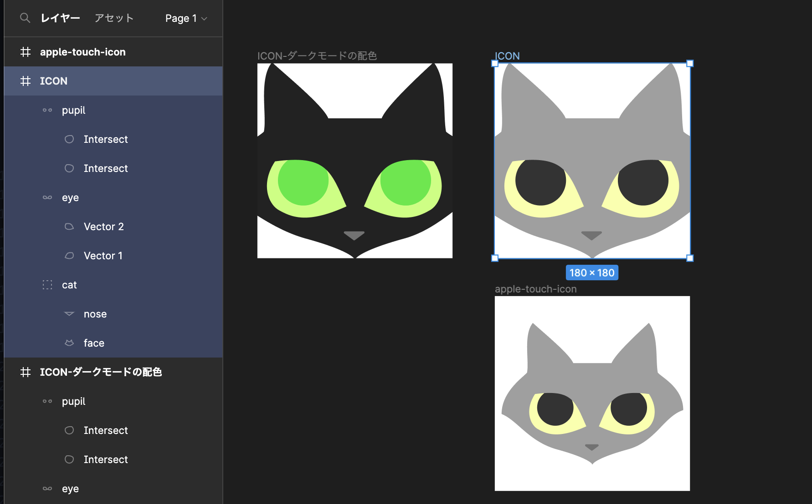
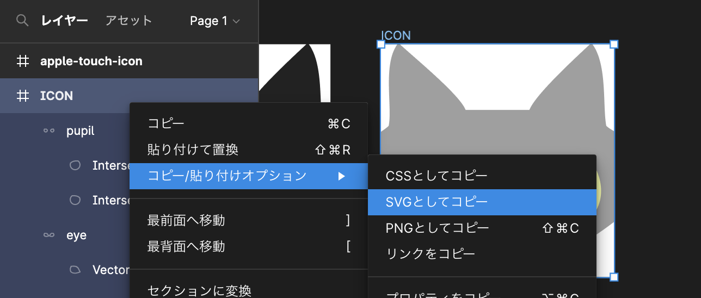

SVGでダークモードに対応したファビコンを作ろう
このページはデモ用のページです。ファイルはGitHubのリポジトリに置いてあるので、再配布以外はご自由にどうぞ！
STEP1. Figma等でファビコンをデザインする
STEP2. SVGを書き出す
Figmaの場合、対象を右クリック→コピー/貼り付けオプション→SVGとしてコピー
STEP3. SVGのコードを書き換える。
以下がダークモード対応に書き換えたSVG画像。（ダークモード/ライトモードを切り替えて見てね）
エディターに移動し、Figmaでコピーしたコードを貼り付け。favicon.svg等の名前でファイルを保存します。
コードは以下。
必要なパーツにclassをつけ、それぞれ色を指定。@media (prefers-color-scheme: dark) {}メディアクエリを使ってダークモードの色も指定します。
<svg width="180" height="180" viewBox="0 0 180 180" fill="none" xmlns="http://www.w3.org/2000/svg">
<style>
.face{ fill: #BCBCBC; }
.pupil{ fill: #333333; }
.eye{ fill: #F8FFA5; }
.nose{ fill: #979797; }
@media (prefers-color-scheme: dark) {
.face{ fill: #000; }
.fur{ fill: #333333; }
.pupil{ fill: #20EA28; }
.eye{ fill: #C1FF73; }
.nose{ fill: #555555; }
}
</style>
<g clip-path="url(#clip0_5_92)">
<rect width="180" height="180" fill="none"/>
<path class="face" d="M13.5 -1C0.893944 14.2603 8.95454 47.795 6 63C0.0909081 69.6349 -40 87.7278 -40 116.258C-19.881 124.213 8.45454 151.921 44.697 161.873C80.9394 171.825 90 179.29 90 181.778C90 179.29 99.0606 171.825 135.303 161.873C171.545 151.921 195.238 119.213 220 111.258C220 82.7278 179.909 69.6349 174 63C171.045 47.795 175.106 14.2603 162.5 -1C150.025 10.6111 119.348 38.819 114.621 50.7619H90H65.3788C60.6515 38.819 25.9747 10.6111 13.5 -1Z" fill="#9F9F9F"/>
<path class="nose" d="M97.8021 155.222H80.7534C79.7893 155.222 79.3835 156.452 80.1584 157.026L88.6827 163.337C89.0363 163.599 89.5193 163.599 89.8728 163.337L98.3972 157.026C99.1721 156.452 98.7663 155.222 97.8021 155.222Z" fill="#727272"/>
<path class="eye" fill-rule="evenodd" clip-rule="evenodd" d="M79.9585 127.015C67.217 97.8338 61.4087 84.5313 16.2914 90.5566C2.75036 110.891 9.79173 129.987 19.9024 135.646C32.5407 142.718 46.9846 148.023 82.1914 132.109C81.4194 130.361 80.6779 128.663 79.9585 127.015ZM100.459 127.015C112.911 97.8338 118.587 84.5313 162.679 90.5566C175.912 110.891 169.031 129.987 159.15 135.646C146.799 142.718 132.683 148.023 98.2766 132.109C99.031 130.361 99.7557 128.663 100.459 127.015Z" fill="#F8FFA5"/>
<path class="pupil" fill-rule="evenodd" clip-rule="evenodd" d="M65.6956 107.977C65.6956 120.874 55.2407 131.329 42.3439 131.329C29.447 131.329 18.9921 120.874 18.9921 107.977C18.9921 100.372 22.6279 93.6153 28.2562 89.3516C46.2274 88.2442 56.3954 91.3888 63.6568 98.4201C64.9669 101.337 65.6956 104.572 65.6956 107.977ZM160.176 107.977C160.176 120.874 149.721 131.329 136.824 131.329C123.928 131.329 113.473 120.874 113.473 107.977C113.473 105.196 113.959 102.528 114.851 100.054C122.04 91.892 132.088 88.1724 150.905 89.3465C156.538 93.61 160.176 100.368 160.176 107.977Z" fill="#333333"/>
</g>
<defs>
<clipPath id="clip0_5_92">
<rect width="180" height="180" fill="white"/>
</clipPath>
</defs>
</svg>STEP4. iOS用にapple-touch-icon.png を作成。
SVGアイコン非対応のiOSのために、apple-touch-icon.pngを作成。
十分な余白をつけましょう。
STEP5. ICOファイルを作成。
先ほどのSVGアイコンを元にICOファイルへ変換します。今回はこちらのツールを使います。32pxを指定して変換します。